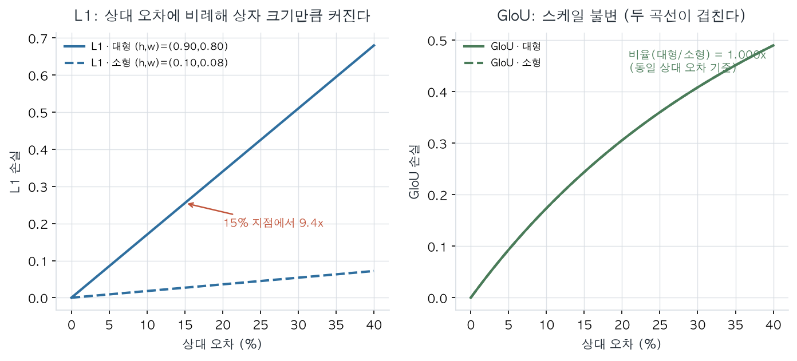
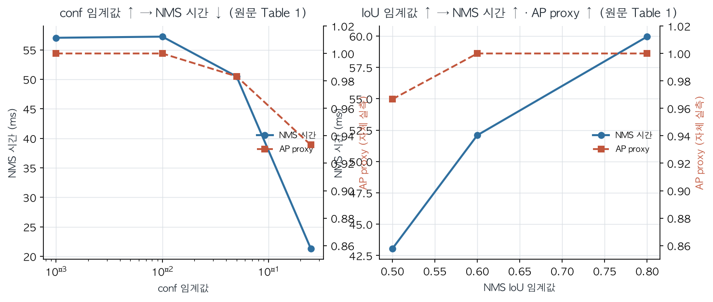
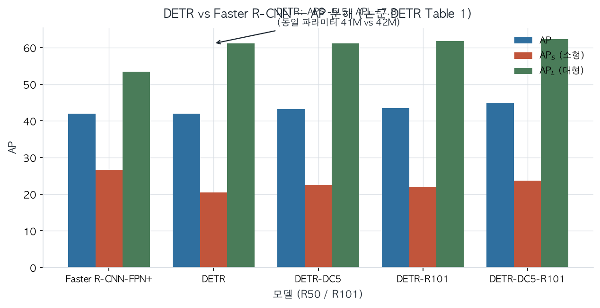
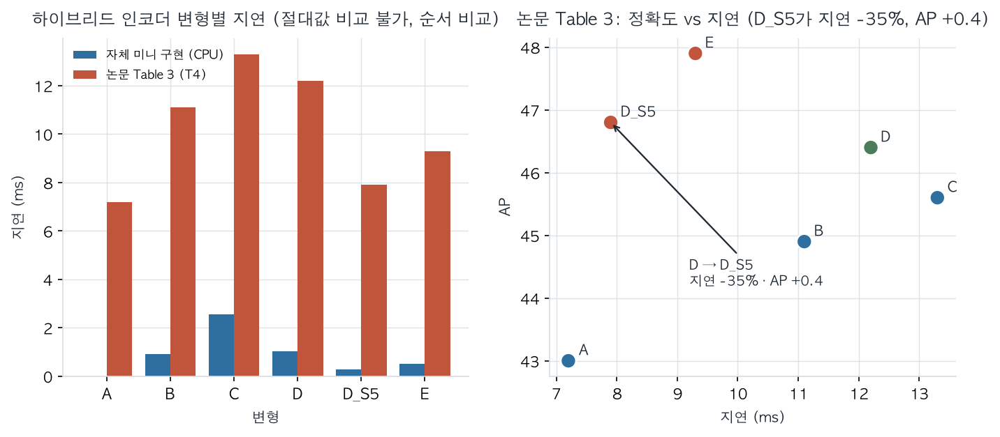
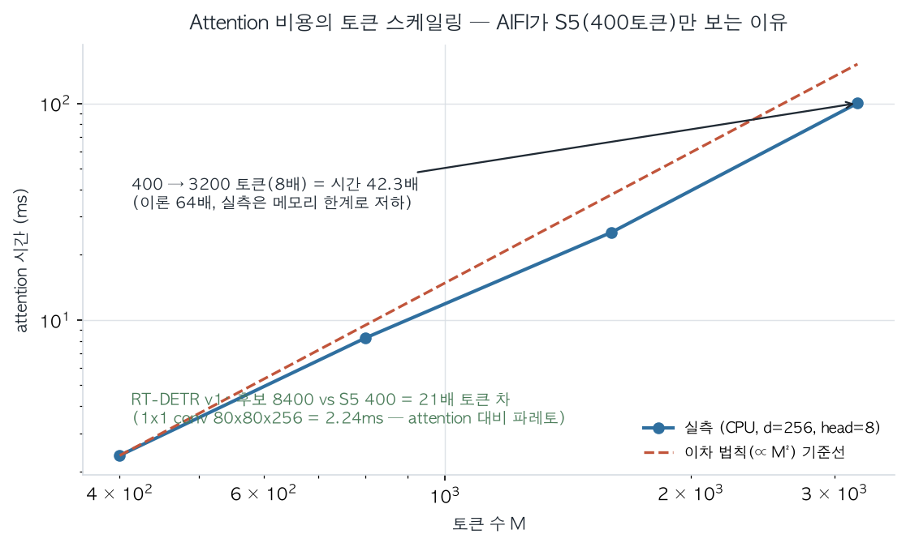
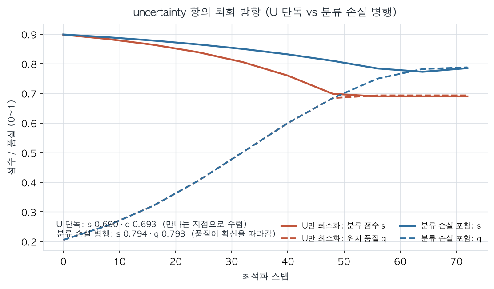
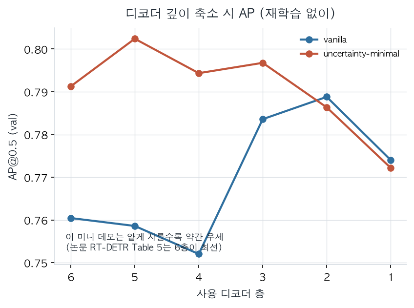

핵심 주장 — DETR은 헝가리안 일대일 매칭으로 중복 억제를 학습한다. RT-DETR은 이를 유지하면서 인코더·쿼리·디코더를 효율화해 실시간 추론에 맞춘다.
42.0DETR R50 AP
53.1RT-DETR R50 AP
108FPS · T4 · TensorRT FP16
34.8RT-DETR APS · 작은 객체 과제
문제앵커 · 중복 예측 · NMS 비용
›
DETR집합 예측 · 최적 일대일 매칭
›
RT-DETR효율적 인코더 · 좋은 쿼리 · 조절 가능한 깊이
01 · 출발점 DETR은 무엇을 바꿨나
기존 검출기는 다수의 제안 상자와 앵커를 만들고, 규칙 및 NMS로 중복을 정리한다. DETR은 이미지의 객체 집합을 한 번에 예측한다.
이미지 백본 특징
›
Transformer 전역 문맥
›
100 학습 쿼리 병렬 디코더
›
객체 집합 분류 + 박스
매칭을 손실 앞단에
헝가리안 알고리즘은 예측 슬롯과 정답 객체 사이의 전역 최적 일대일 대응을 정한다. 각 객체는 한 슬롯에만 배정되어, NMS 없이 중복 없는 집합 예측을 학습하도록 한다.
L = Lclass + λ1L1 + λGLGIoU
L1은 좌표 차이를 직접 줄이고 GIoU는 겹침·상대 기하 신호를 제공한다. 같은 15% 상대 오차에서 실습 [B]의 대형/소형 L1 비는 9.44×, GIoU 비는 1.000×였다.

그림 1. 박스 크기 변화에 대한 L1과 GIoU의 반응 — 실습 [B], 합성 박스.
02 · NMS 딜레마 속도와 정확도의 손잡이
RT-DETR 논문 Table 1의 YOLOv8 결과에서 confidence 임계값을 올리면 후보를 더 많이 버려 NMS는 빨라지지만 AP가 낮아진다. IoU 임계값을 높이면 덜 억제해 AP는 오르지만 처리 시간이 늘어난다.
조절
AP 변화
NMS 시간
conf 0.001 → 0.05
52.9 → 51.2
2.36 → 1.06 ms
IoU 0.5 → 0.8
52.1 → 52.8
2.24 → 2.46 ms
NMS-free는 이 임계값 절충을 추론 후처리에서 제거하고, 일대일 매칭 학습에 중복 억제를 맡긴다. YOLO의 흔한 모델 속도 보고는 NMS를 제외하므로, 논문은 NMS 플러그인을 포함하는 end-to-end benchmark를 따로 구성했다.

그림 2. 실습 [A]의 CPU·합성 데이터 측정. conf 0.001→0.25에서 시간 57.03→21.29ms, AP proxy 1.000→0.933. 절대값은 논문과 비교할 수 없고 변화 방향만 비교한다.
경계: 이 논문은 Video Object Detection의 프레임 간 ID 연결이나 프레임 IoU를 실험하지 않는다. NMS-free가 시간적 추적까지 해결한다는 증거는 아니다.
03 · 성능 맥락 DETR의 규모별 특성
DETR은 Faster R-CNN-FPN+과 전체 AP가 비슷하지만, 큰 객체에서는 강하고 작은 객체에서는 약한 양상이 나타난다.

그림 3. DETR 대 Faster R-CNN — 논문 Table 1의 AP 규모별 분해. APS −5.5, APL +7.8.
04 · 병목에서 설계로 AIFI는 왜 S5만 보나
RT-DETR §3.2는 Deformable-DETR 인코더가 GFLOPs의 49%를 차지하지만 AP 기여는 11%라고 인용한다. 이는 RT-DETR의 자체 측정이 아닌 선행 연구에서 가져온 2차 통계다.
Table 3 변형
AP
지연
A · 인코더 제거
43.0
7.2ms
B · 단일 스케일 Transformer
44.9
11.1ms
C · 멀티스케일 Transformer
45.6
13.3ms
D · 상호작용/융합 분리
46.4
12.2ms
DS5 · attention은 S5만
46.8
7.9ms
E · AIFI + CCFF
47.9
9.3ms
D의 의미: 인코더의 스케일 내 상호작용과 스케일 간 융합을 분리하면 C보다 빠르고 정확해진다. D→DS5: attention을 S5에 한정하면 지연은 약 35% 감소하고 AP는 0.4 증가한다.
AIFI는 의미가 풍부한 저해상도 S5에서 self-attention을 하고, CCFF는 CNN 기반으로 피처 스케일을 융합한다. 논문은 하위 레벨의 attention이 의미 개념은 부족하고 상위 레벨과 duplication and confusion 위험이 있다고 설명한다.
Attention pairs ∝ M² (8400 / 400)² = 441×
이는 토큰쌍 연산 규모의 이론적 비율이며 전체 지연시간 배수는 아니다. 실습 [B]에서는 토큰 400→3200(8배)에 attention 시간이 42.3배로 증가했다.

그림 4. 실습 [C]의 지연 순서 A < DS5 < E < B < D < C는 논문 Table 3 순서를 재현. 실측 절대값은 논문 지연과 직접 비교하지 않는다.

그림 5. Attention 토큰 수와 CPU 실측 시간. S5에 attention을 집중하는 계산상 동기.
05 · 쿼리 품질 Uncertainty가 바꾸는 것
U(X) = ‖Plocation(X) − Cclass(X)‖
식 (2)의 U는 위치 예측과 분류 예측의 불일치를 나타낸다. 식 (3)은 U를 손실에 넣어, 분류와 위치 품질이 더 일치하는 인코더 피처를 학습한다.
47.9 → 48.7AP · +0.8
0.35 → 0.82%Prop cls
0.30 → 0.67%Prop both
Fig. 6에서 uncertainty 방식의 보라색 점은 분류·IoU 양쪽이 높은 우상단에 모인다. 논문의 138%·120%는 임계값 조건에 해당하는 점들의 상대 개수 차이이지 퍼센트포인트가 아니다.
랭킹 ≠ 손실: 공개 코드의 top-K는 분류 점수 기준이다. 바뀐 핵심은 추론 시 선택 랭킹이 아니라 학습 목적함수다. 그 손실로 분류 랭킹이 고르는 피처의 품질을 높인다.

그림 6. 실습 [D]에서 U 단독 최적화는 s 0.90→0.690, q 0.20→0.693으로 두 점수를 같은 값으로 끌어가는 퇴화 해를 보였다. 분류 손실 병행은 이 문제를 완화한다.
06 · 추론 조절 디코더 깊이로 속도 변경
각 디코더 층의 보조 예측 손실이 중간 층에도 예측을 학습시키므로, 마지막 층까지 실행하지 않아도 된다.
Det6 출력 층
AP
지연
6층
53.1
9.3ms
5층
53.0
8.8ms
1층
49.1
7.0ms
층당 비용은 대략 0.4~0.5ms씩 추가되지만 AP 이득은 1→2층 +2.2에서 5→6층 +0.1로 감소한다. 배포에서는 eval_idx로 사용할 층 출력을 고르고, max_det은 별도로 반환 검출 수 상한을 정한다.

그림 7. 재학습 없이 디코더 깊이를 줄여 추론 지연을 조절하는 구조.
실습 데모에서는 5층이 6층보다 약간 높게 나온 경우도 있었다. 합성 데이터·작은 객체 수·짧은 학습 조건이 논문 COCO 결과와 다르므로, 구조 재현과 성능 곡선의 재현은 구별해야 한다.
07 · 결과 빠르면서 정확하게
모델
AP
APS
APL
FPS
DETR R50
42.0
20.5
61.1
28
RT-DETR R50
53.1
34.8
70.0
108
조건부 참고: RT-DETR은 640×640·72 epoch, DETR은 800×1333·500 epoch 결과다. 입력 크기와 학습 일정이 달라 절대 속도·정확도를 통제한 비교는 아니다.
08 · 남은 과제 한계와 배운 점
RT-DETR-R50의 APS 34.8은 YOLOv8-L의 35.3보다 0.5 낮고, R101도 비교 모델보다 0.9 낮다. 49/11은 2차 통계이며, FPS는 하드웨어·런타임 조건에 의존한다. 논문은 2D COCO를 평가했을 뿐 3D 깊이 추정이나 멀티뷰 검출은 검증하지 않았다.
09 · 학습 과정 주장 → 근거 → 경계
원문 표·식을 확인하고, 매칭·NMS·attention·쿼리 손실 실습으로 방향성을 점검했다. 실습은 합성 데이터와 CPU 측정이므로 논문 COCO/GPU 수치의 재현으로 주장하지 않는다.